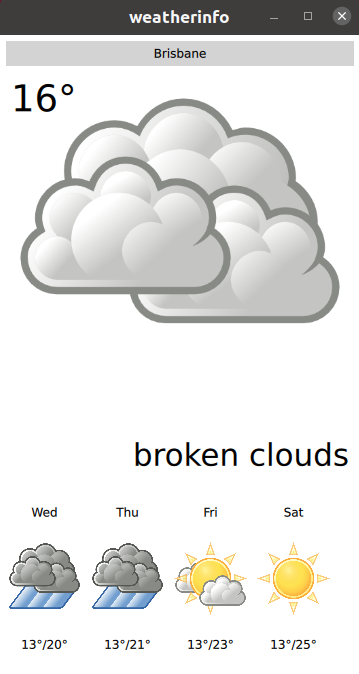

Weather Info (C++/QML)
The Weather Info example shows how to use the user's current position to retrieve local content from a web service in a C++ plugin for QML.
Key Qt Positioning classes used in this example:

Running the Example
To run the example from Qt Creator, open the Welcome mode and select the example from Examples. For more information, visit Building and Running an Example.
Weather Data Providers
The example uses several unrelated weather data providers:
The provider to be used is selected automatically at runtime and can be changed if the selected provider is not available. However, it can't be specified manually.
Note: Free plans are used for all providers, which implies certain limitations on the amount of weather requests. If the limits are exceeded, the providers become temporary unavailable. When all providers are unavailable, the application would not be able to show any weather information. In this case it is required to wait until at least one of the providers becomes available again.
Application Data Models
The key part of this example is the application's data model, contained in the WeatherData and AppModel classes. WeatherData represents the weather information taken from the HTTP service. It is a simple data class, but we use Q_PROPERTY to expose it nicely to QML later. It also uses QML_ANONYMOUS macro, which makes it recognized in QML.
class WeatherData : public QObject { Q_OBJECT Q_PROPERTY(QString dayOfWeek READ dayOfWeek WRITE setDayOfWeek NOTIFY dataChanged) Q_PROPERTY(QString weatherIcon READ weatherIcon WRITE setWeatherIcon NOTIFY dataChanged) Q_PROPERTY(QString weatherDescription READ weatherDescription WRITE setWeatherDescription NOTIFY dataChanged) Q_PROPERTY(QString temperature READ temperature WRITE setTemperature NOTIFY dataChanged) QML_ANONYMOUS public: explicit WeatherData(QObject *parent = 0); WeatherData(const WeatherData &other); WeatherData(const WeatherInfo &other); QString dayOfWeek() const; QString weatherIcon() const; QString weatherDescription() const; QString temperature() const; void setDayOfWeek(const QString &value); void setWeatherIcon(const QString &value); void setWeatherDescription(const QString &value); void setTemperature(const QString &value); signals: void dataChanged(); };
AppModel models the state of the entire application. At startup, we get the platform's default position source using QGeoPositionInfoSource::createDefaultSource().
AppModel::AppModel(QObject *parent) : QObject(parent), d(new AppModelPrivate) { d->src = QGeoPositionInfoSource::createDefaultSource(this); if (d->src) { d->useGps = true; connect(d->src, &QGeoPositionInfoSource::positionUpdated, this, &AppModel::positionUpdated); connect(d->src, &QGeoPositionInfoSource::errorOccurred, this, &AppModel::positionError); #if QT_CONFIG(permissions) QLocationPermission permission; permission.setAccuracy(QLocationPermission::Precise); permission.setAvailability(QLocationPermission::WhenInUse); switch (qApp->checkPermission(permission)) { case Qt::PermissionStatus::Undetermined: qApp->requestPermission(permission, [this] (const QPermission& permission) { if (permission.status() == Qt::PermissionStatus::Granted) d->src->startUpdates(); else positionError(QGeoPositionInfoSource::AccessError); }); break; case Qt::PermissionStatus::Denied: qWarning("Location permission is denied"); positionError(QGeoPositionInfoSource::AccessError); break; case Qt::PermissionStatus::Granted: d->src->startUpdates(); break; } #else d->src->startUpdates(); #endif } else { d->useGps = false; d->city = "Brisbane"; emit cityChanged(); requestWeatherByCity(); } }
If no default source is available, we take a static position and fetch weather for that. If, however, we do have a position source, we connect its positionUpdated() signal to a slot on the AppModel and call startUpdates(), which begins regular updates of device position.
When a position update is received, we use the longitude and latitude of the returned coordinate to retrieve weather data for the specified location.
void AppModel::positionUpdated(QGeoPositionInfo gpsPos) { d->coord = gpsPos.coordinate(); if (!d->useGps) return; requestWeatherByCoordinates(); }
To inform the UI about this process, the cityChanged() signal is emitted when a new city is used, and the weatherChanged() signal whenever a weather update occurs.
The model also uses QML_ELEMENT macro, which makes it available in QML.
class AppModel : public QObject { Q_OBJECT Q_PROPERTY(bool ready READ ready NOTIFY readyChanged) Q_PROPERTY(bool hasSource READ hasSource NOTIFY readyChanged) Q_PROPERTY(bool hasValidCity READ hasValidCity NOTIFY cityChanged) Q_PROPERTY(bool hasValidWeather READ hasValidWeather NOTIFY weatherChanged) Q_PROPERTY(bool useGps READ useGps WRITE setUseGps NOTIFY useGpsChanged) Q_PROPERTY(QString city READ city WRITE setCity NOTIFY cityChanged) Q_PROPERTY(WeatherData *weather READ weather NOTIFY weatherChanged) Q_PROPERTY(QQmlListProperty<WeatherData> forecast READ forecast NOTIFY weatherChanged) QML_ELEMENT public: explicit AppModel(QObject *parent = 0); ~AppModel(); bool ready() const; bool hasSource() const; bool useGps() const; bool hasValidCity() const; bool hasValidWeather() const; void setUseGps(bool value); QString city() const; void setCity(const QString &value); WeatherData *weather() const; QQmlListProperty<WeatherData> forecast() const; public slots: Q_INVOKABLE void refreshWeather(); signals: void readyChanged(); void useGpsChanged(); void cityChanged(); void weatherChanged(); };
We use a QQmlListProperty for the weather forecast information, which contains the weather forecast for the next days (the number of days is provider-specific). This makes it easy to access the forecast from QML.
Expose Custom Models to QML
To expose the models to the QML UI layer, we use the QML_ELEMENT and QML_ANONYMOUS macros. See the QQmlEngine class description for more details on these macros.
To make the types available in QML, we need to update our build accordingly.
CMake Build
For a CMake-based build, we need to add the following to the CMakeLists.txt:
qt_add_qml_module(weatherinfo
URI Weather
VERSION 1.0
SOURCES
appmodel.cpp appmodel.h
openmeteobackend.cpp openmeteobackend.h
openweathermapbackend.cpp openweathermapbackend.h
providerbackend.cpp providerbackend.h
weatherapibackend.cpp weatherapibackend.h
QML_FILES
BigForecastIcon.qml
ForecastIcon.qml
WeatherIcon.qml
WeatherInfo.qml
RESOURCES
icons/weather-few-clouds.png
icons/weather-fog.png
icons/weather-haze.png
icons/weather-icy.png
icons/weather-overcast.png
icons/weather-showers.png
icons/weather-sleet.png
icons/weather-snow.png
icons/weather-storm.png
icons/weather-sunny-very-few-clouds.png
icons/weather-sunny.png
icons/weather-thundershower.png
icons/weather-showers-scattered.png
)
qmake Build
For a qmake build, we need to modify the weatherinfo.pro file in the following way:
CONFIG += qmltypes
QML_IMPORT_NAME = Weather
QML_IMPORT_MAJOR_VERSION = 1
qml_resources.files = \
qmldir \
BigForecastIcon.qml \
ForecastIcon.qml \
WeatherIcon.qml \
WeatherInfo.qml \
icons/weather-few-clouds.png \
icons/weather-fog.png \
icons/weather-haze.png \
icons/weather-icy.png \
icons/weather-overcast.png \
icons/weather-showers.png \
icons/weather-showers-scattered.png \
icons/weather-sleet.png \
icons/weather-snow.png \
icons/weather-storm.png \
icons/weather-sunny-very-few-clouds.png \
icons/weather-sunny.png \
icons/weather-thundershower.png
qml_resources.prefix = /qt/qml/Weather
RESOURCES += qml_resources
Instantiate the Models in QML
Finally, in the actual QML, we instantiate the AppModel:
Window { id: window AppModel { id: appModel onReadyChanged: { if (appModel.ready) statesItem.state = "ready" else statesItem.state = "loading" } } }
Once the model is instantiated like this, we can use its properties elsewhere in the QML document:
BigForecastIcon {
id: current
width: main.width -12
height: 2 * (main.height - 25 - 12) / 3
weatherIcon: (appModel.hasValidWeather
? appModel.weather.weatherIcon
: "sunny")
}
Files and Attributions
The example bundles the following images from Third-Party sources:
| Tango Icons | Public Domain |
| Tango Weather Icon Pack by Darkobra | Public Domain |